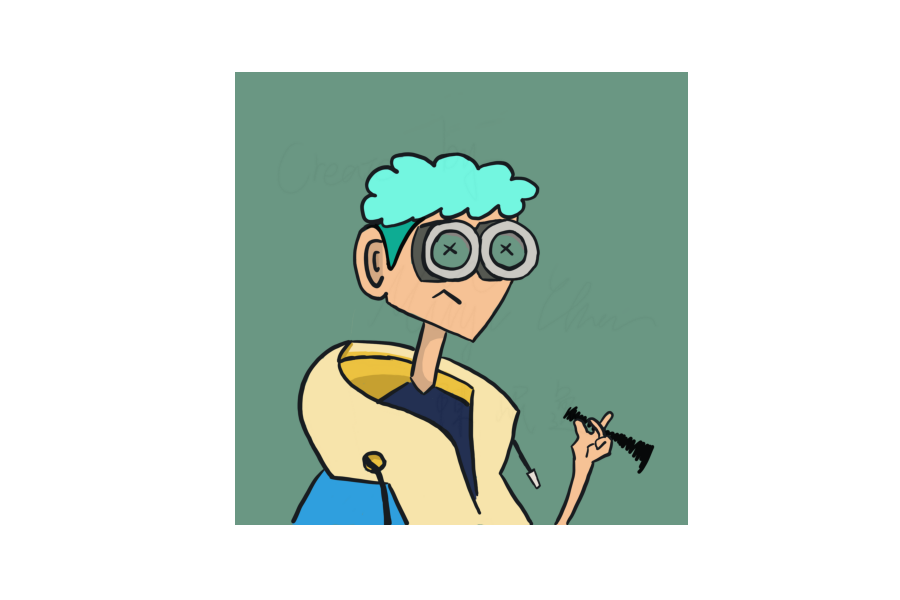
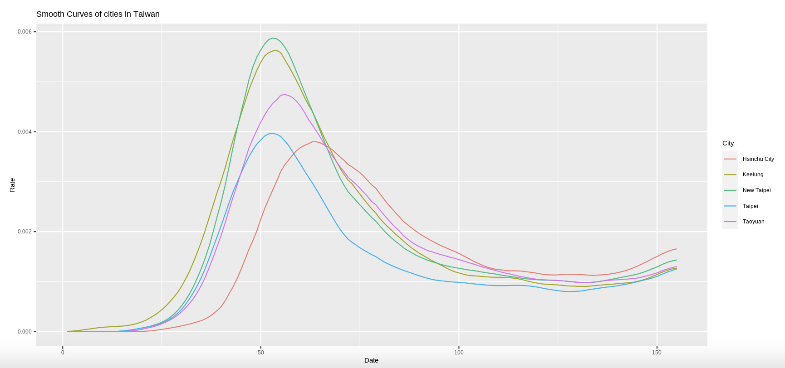
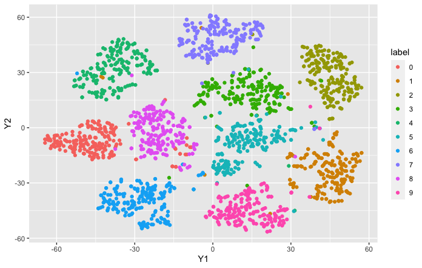

Born in Jan 02, 2000
Currently a senior student in Statistics at National Chengchi University and part-time research assistant in Institute of Statistical Science, Academia Sinica.
I am interested in Markov Chain, Bayesian Variable Selection, MCMC and related applications. Furthermore, I am now working on a research project related to manifold learning and convex optimization
My personal hobbies are tennis and calligraphy.


This is a research cooperate with Dr. Ting-Li Chen,Dr. Elizabeth Chou and Dr. Fushing Hsieh .
We have been studying the dynamic curves of the spread of Covid-19 in Taiwan by computational developments based on theoretical information measurements of conditional entropy and mutual information.

This research is my personal research project supported by National Science and Technology Council, Taiwan.
The research is under the guidance of Dr. Han-Ming Wu, and it is now on-going , expected to be publish in 2023.